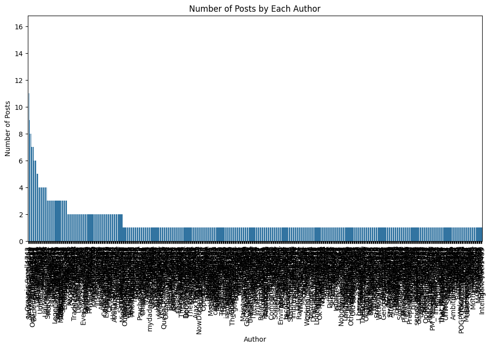
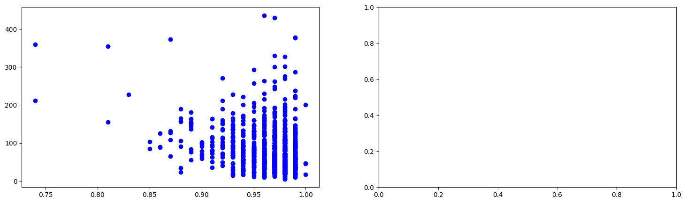

import praw
reddit = praw.Reddit("CREDENCIALES")
subreddit = reddit.subreddit('lies')Reddit API
Extracción de datos usando la api de reddit
Este código utiliza la API de Reddit a través de la biblioteca praw para extraer datos del subreddit 'learnpython'. PRAW, acrónimo de “Python Reddit API Wrapper”, es un paquete de Python que permite un acceso sencillo a la API de Reddit.
Para configurar las credenciales de autenticación de Reddit, debes crear un archivo de configuración llamado praw.ini. Este archivo debe estar ubicado en el mismo directorio que tu script.
El archivo praw.ini debe tener el siguiente formato:
[CREDENCIALES]
client_id=YOUR_CLIENT_ID
client_secret=YOUR_CLIENT_SECRET
password=YOUR_REDDIT_PASSWORD
username=YOUR_REDDIT_USERNAME
user_agent=YOUR_USER_AGENTAsegúrate de reemplazar YOUR_CLIENT_ID, YOUR_CLIENT_SECRET, YOUR_PASSWORD, YOUR_USERNAME y YOUR_USER_AGENT con tus propias credenciales de Reddit.
Una vez que hayas creado y guardado este archivo, PRAW lo utilizará automáticamente para autenticar tus solicitudes a la API de Reddit.
Luego, obtiene los 500,000 posts principales del subreddit y almacena información relevante de cada post (título, puntuación, id, subreddit, url, número de comentarios, texto del post y fecha de creación) en una lista.
posts = []
for post in subreddit.new(limit=3000):
posts.append([post.title, post.score, post.id, post.subreddit, post.url, post.num_comments, post.selftext, post.created, post.author, post.upvote_ratio, post.num_reports, post.mod_reports])Finalmente, convierte esta lista en un DataFrame de pandas y muestra las primeras 10 filas del DataFrame.
import pandas as pd
df = pd.DataFrame(posts, columns=['title', 'score', 'id', 'subreddit', 'url', 'num_comments', 'body', 'created','author','upvote_ratio', 'num_reports','mod_reports'])
df.to_csv('reddit_v4.csv', index=False)
df['created'] = pd.to_datetime(df['created'], unit='s') # Se convierte la fecha a un formato legible
df.head(10)| title | score | id | subreddit | url | num_comments | body | created | author | upvote_ratio | num_reports | mod_reports | |
|---|---|---|---|---|---|---|---|---|---|---|---|---|
| 0 | This was the map of Europe in 1919 | 1 | 1g6kyyo | lies | https://i.redd.it/f3sxeknxajvd1.jpeg | 0 | 2024-10-18 15:35:59 | TheSip69 | 1.00 | None | [] | |
| 1 | The lineup of the New Fantastic 4 is really co... | 1 | 1g6kxyf | lies | https://i.redd.it/kz0pbeqrajvd1.jpeg | 0 | 2024-10-18 15:35:04 | AskJeevesIsBest | 1.00 | None | [] | |
| 2 | This is how America looks like after WW3 | 8 | 1g6j3mf | lies | https://i.redd.it/2lqn5bqnwivd1.jpeg | 2 | 2024-10-18 14:15:58 | MilesAhXD | 0.79 | None | [] | |
| 3 | I’m playing Valorant | 2 | 1g6j15h | lies | https://i.redd.it/1odykr14wivd1.jpeg | 0 | 2024-10-18 14:12:56 | Far_Departure_1580 | 1.00 | None | [] | |
| 4 | Camels and giraffes are the only animals | 9 | 1g6it4r | lies | https://i.redd.it/yjjmtz4auivd1.png | 0 | 2024-10-18 14:02:52 | Available-Zombie1208 | 1.00 | None | [] | |
| 5 | if you see evil ye YOU WILL DIE‼️!!!!!1! | 36 | 1g6iqa3 | lies | https://i.redd.it/lppnelnqtivd1.png | 10 | 2024-10-18 13:59:37 | realweekdays133 | 0.98 | None | [] | |
| 6 | This image sucks | 223 | 1g6idkr | lies | https://i.redd.it/uk85n4stqivd1.jpeg | 9 | 2024-10-18 13:43:16 | Kiraethu | 0.99 | None | [] | |
| 7 | Why did Mr breast do this? | 134 | 1g6ht7q | lies | https://i.redd.it/eecokhzzlivd1.jpeg | 5 | 2024-10-18 13:16:15 | Certifiedboykisser2 | 0.99 | None | [] | |
| 8 | I was banned from /r/lies for a post I'm going... | 1 | 1g6dk96 | lies | https://i.redd.it/ab12kz3tahvd1.png | 0 | 2024-10-18 08:53:14 | ImmaRussian | 1.00 | None | [] | |
| 9 | I'm fluent in spanish | 3 | 1g6gqpf | lies | https://www.reddit.com/r/lies/comments/1g6gqpf... | 1 | 2024-10-18 12:22:24 | bigbig-dan | 1.00 | None | [] |
import seaborn as sns
import matplotlib.pyplot as plt
# Calculate the number of posts by each author
author_counts = df['author'].value_counts().reset_index()
author_counts.columns = ['author', 'post_count']
# Display the DataFrame
print(author_counts)
# Plot the relationship between authors and their post counts
plt.figure(figsize=(12, 6))
sns.barplot(x='author', y='post_count', data=author_counts)
plt.title('Number of Posts by Each Author')
plt.xlabel('Author')
plt.ylabel('Number of Posts')
plt.xticks(rotation=90) # Rotate author names for better readability
plt.show() author post_count
0 Organic-Smell4743 16
1 Nervous-Estate-1852 11
2 SavageFractalGarden 9
3 d_-_p 8
4 Niteshade_YT 8
.. ... ...
689 Preeeeow 1
690 comfybuck 1
691 20195780 1
692 SpookyWeebou 1
693 Intelligent-Fuel1485 1
[694 rows x 2 columns]
tipos de analisis
- primer analisis temporal
- pandas
- numpy
- matplotlib
- seaborn
- agrupar para hacer los graficos
- distribuciones, boxplot, etc XDXD
si no existen datos temporales no se pueden analizar
tres tipos de analisis minimo
la primera tarea es hacer un analisis exploratorio de dato (EDA en ingles)
en otro marco, analisis temporal, analisis de agrupacion, analisis de distribucion,
ya se puede hacer un analisis de distribucion por autor
ratio: It’s the ratio between upvotes and total votes. For example, if a post has 3 upvotes and 1 downvote, it has 75% upvote rate because 3 is 75% of 4.
import matplotlib.pyplot as plt
data = pd.read_csv('reddit_v2.csv')
fig, a = plt.subplots(1, 2, figsize = (18, 5))
a[0].scatter(data['upvote_ratio'], data['num_comments'], color='blue')
plt.show()